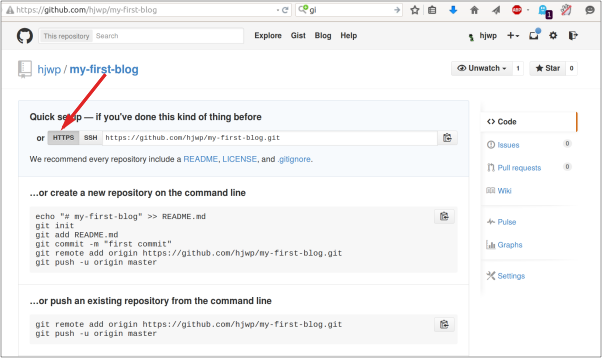
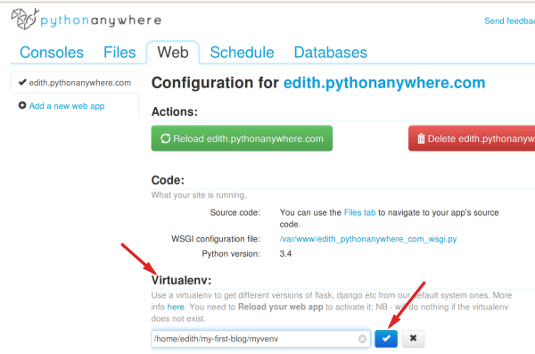

Veröffentlichen!
Hinweis: Durch das folgende Kapitel muss man sich manchmal durchbeißen. Bleib dran und gib nicht auf; die Website zu veröffentlichen ist ein sehr wichtiger Schritt. Dieses Kapitel ist in der Mitte des Tutorials platziert, damit dir dein Mentor mit dem etwas anspruchsvolleren Vorgang der Veröffentlichung deiner Website helfen kann. Den Rest des Tutorials kannst du dann auch alleine beenden, sollte die Zeit nicht ausreichen.
Bis jetzt lief die Website nur auf deinem Computer, jetzt wollen wir sie veröffentlichen! Auf Englisch sagt man dazu deploy. Deployen bedeutet, dass du deine Anwendung im Internet veröffentlichst, so dass endlich jeder darauf zugreifen kann :).
Wie du schon gelernt hast, muss eine Webseite auf einem Server liegen. Es sind eine Menge Server-Anbieter im Internet verfügbar. Wir werden einen verwenden, der einen relativ einfachen Veröffentlichungsprozess (deployment process) hat: PythonAnywhere. PythonAnywhere ist kostenlos für kleine Anwendungen, die nicht von vielen Besuchern aufgerufen werden. Also erstmal genau das Richtige für dich.
Als weiteren externen Dienst werden wir GitHub nutzen, einen "Code Hosting"-Dienst. Es gibt noch andere solcher Dienste, aber die meisten Programmierer haben heute ein Konto bei GitHub, und du gleich auch!
GitHub wird unsere Basis für die Übertragung unseres Code von und nach PythonAnywhere sein.
Git
Git ist ein "Versionsverwaltungssystem", das von vielen Programmierern benutzt wird. Diese Software kann Änderungen an Dateien über die Zeit verfolgen, so dass du bestimmte Versionen im Nachhinein wieder aufrufen kannst. Ein bisschen wie die "Track Changes" Funktion in Microsoft Word, aber viel leistungsfähiger.
Git installieren
Hinweis: Falls du die Installationsschritte bereits durchgeführt hast, kannst du mit dem nächsten Abschnitt fortfahren und anfangen, dein Git-Repository zu erstellen.
Es gibt viele verschiedene Editoren. Welcher für dich am besten ist, ist weitestgehend Geschmackssache. Die meisten Python-Programmiererinnen verwenden komplexe, aber extrem leistungsfähige IDEs (Integrated Development Environments), z. B. PyCharm. Für Anfängerinnen sind diese jedoch wahrscheinlich weniger gut geeignet. Unsere Empfehlungen sind ebenso leistungsfähig, aber viel einfacher zu bedienen.
Unsere Vorschläge siehst du unten. Aber fühl dich ganz frei, deine Trainerin zu fragen, was ihre Vorlieben sind - wenn sie sich mit dem Editor auskennt, wird es leichter sein, Hilfe zu erhalten.
Gedit
Gedit ist ein kostenloser Open-Source-Editor. Es gibt ihn für alle Betriebssysteme.
Sublime Text 2
Sublime Text ist ein sehr beliebter Editor mit einem kostenlosen Testzeitraum. Er ist einfach zu installieren und zu verwenden, und er ist für alle Betriebssysteme verfügbar.
Atom
Atom ist ein ganz neuer Code-Editor, der von GitHub ins Leben gerufen wurde. Er ist kostenlos, quelloffen (Open Source), einfach zu installieren und einfach zu bedienen. Atom ist verfügbar für Windows, OS X und Linux.
Warum installieren wir einen Code-Editor?
Vielleicht wunderst du dich, warum wir so spezielle Code-Editor-Software installieren, statt einfach etwas wie Word oder Notepad zu benutzen.
Erstens muss Code "plain text" (unformatierter Text) sein. Das Problem mit Programmen wie Word und Textedit ist, dass sie nicht "plain text" sondern "rich text" (mit Schriftarten und Formatierungen) produzieren und besondere Formate wie RTF (Rich Text Format) verwenden.
Ein weiterer Grund ist, dass Code-Editoren (bisweilen auch Programmier- oder Text-Editoren genannt) auf das Bearbeiten von Programm-Code spezialisiert sind und Funktionen aufweisen, die normale Textverarbeitungen nicht haben. Beispielsweise sogenanntes "Syntax-Highlighting", also farbliches Hervorheben bestimmter Code-Stellen, oder auch das automatische Schließen von Klammern und vieles mehr.
Einige davon werden wir später in Aktion sehen. Glaub uns: es wird nicht lange dauern, bis du deinen Code-Editor nicht mehr missen möchtest :)
Unser Git-Repository
Git verwaltet die Veränderungen an einer Sammlung von Dateien in einem sogenannten Repository (oder kurz "Repo"). Wir legen eins für unser Projekt an. Öffne deine Konsole und gibt folgende Kommandos im djangogirls-Verzeichnis ein:
Hinweis: Überprüfe dein aktuelles Arbeitsverzeichnis mit dem Befehl
pwd(OSX/Linux) odercd(Windows) bevor du das Repository initialisierst. Du musst dich imdjangogirls-Verzeichnis befinden, bevor du fortfährst.
$ git init
Initialized empty Git repository in ~/djangogirls/.git/
$ git config --global user.name "Dein Name"
$ git config --global user.email du@beispiel.com
Die Initialisierung eines Git-Repository müssen wir nur einmal pro Projekt machen (und du musst nicht noch einmal Deinen Benutzernamen und E-Mail-Adresse eingeben).
Git wird die Änderungen an all den Dateien und Ordnern in diesem Verzeichnis aufzeichnen. Wir wollen aber, dass einige Dateien ignoriert werden. Dazu legen wir eine Datei .gitignore im Basisverzeichnis des Repos an. Öffne deinen Editor und erstelle eine neue Datei mit dem folgenden Inhalt:
*.pyc
__pycache__
myvenv
db.sqlite3
.DS_Store
Speichere die Datei mit dem Namen .gitignore im "djangogirls"-Verzeichnis.
Hinweis: Der Punkt vor dem Dateinamen ist wichtig! Wenn du Schwierigkeiten beim Erstellen hast (z.B. lassen Macs im Finder keine Dateien mit Punkt am Anfang erzeugen, Punkt-Dateien sind auf Linux und OS X "versteckte Dateien"), dann verwende die "Speichern unter"-Funktion im Editor, das sollte immer funktionieren.
Es ist hilfreich den Befehl git status vor git add auszuführen oder immer dann, wenn du dir unsicher bist, was geändert wurde. Das schützt vor manchen Überraschungen, wie z. B. das falsche Hinzufügen oder Übertragen von Dateien. Das git status-Kommando gibt Informationen über unbeobachtete/veränderte/hinzugefügte Dateien, den Verzweigungsstatus und einiges mehr wieder. Die Ausgabe sollte so oder so ähnlich sein:
$ git status
On branch master
Initial commit
Untracked files:
(use "git add <file>..." to include in what will be committed)
.gitignore
blog/
manage.py
mysite/
nothing added to commit but untracked files present (use "git add" to track)
Nun speichern wir unsere Änderungen durch folgende Eingabe in der Konsole:
$ git add -A .
$ git commit -m "Meine Django Girls App, erster Commit"
[...]
13 files changed, 200 insertions(+)
create mode 100644 .gitignore
[...]
create mode 100644 mysite/wsgi.py
Den Code auf GitHub veröffentlichen
Öffne GitHub.com und registriere dich für ein neues, kostenloses Benutzerkonto. (Wenn du das bereits in deiner Vorbereitung auf den Workshop getan hast, dann ist das großartig!)
Erstelle dann ein neues Repository und gib ihm den Namen "my-first-blog". Lass das Kontrollkästchen "initialise with a README" deaktiviert, die Einstellung der Option .gitignore frei (das haben wir schon von Hand gemacht) und lass die Lizenz auf "None".

Achtung: Der Name
my-first-blogist wichtig -- du kannst auch einen anderen wählen, aber er wird im Folgenden noch sehr oft vorkommen und du wirst immer daran denken müssen, ihn in den Anweisungen entsprechend anzupassen. Lass es besser erst mal beimy-first-blog.
Auf der nächsten Seite wird dir die Clone-URL des Repos angezeigt. Nimm die HTTPS-Variante, kopiere sie und füge sie in der Konsole ein:

Nun müssen wir das Git-Repository auf deinem Computer mit dem auf GitHub verbinden.
Gib Folgendes in deine Konsole ein (Ersetze dabei <your-github-username> durch deinen Benutzernamen, den du bei der Erstellung deines GitHub-Kontos benutzt hast, aber ohne die eckigen Klammern.):
$ git remote add origin https://github.com/<your-github-username>/my-first-blog.git
$ git push -u origin master
Gibt deinen GitHub-Benutzernamen und dein Passwort ein und du solltest etwas Ähnliches wie das hier sehen:
Username for 'https://github.com': hjwp
Password for 'https://hjwp@github.com':
Counting objects: 6, done.
Writing objects: 100% (6/6), 200 bytes | 0 bytes/s, done.
Total 3 (delta 0), reused 0 (delta 0)
To https://github.com/hjwp/my-first-blog.git
* [new branch] master -> master
Branch master set up to track remote branch master from origin.
Dein Code ist jetzt auf GitHub. Schau gleich mal nach! Dort ist dein Code du in guter Gesellschaft - Django, das Django Girls Tutorial und viele andere großartige Open Source Software-Projekte haben ihren Code auf GitHub :)
Deinen Blog auf PythonAnywhere einrichten
Hinweis: Es ist möglich, dass du bereits ein PythonAnywhere Konto angelegt hast. Wenn ja, dann brauchst du das nicht noch einmal zu tun.
Als Nächstes erstellst du ein kostenfreies "Beginner"-Konto auf PythonAnywhere.
Beachte: Wenn du dort deinen Benutzernamen aussuchst, dann denke daran, dass sich die URL zu deinem Blog folgendermaßen zusammensetzt:
deinbenutzername.pythonanywhere.com. Wähle demnach deinen eigenen Nicknamen oder einen Namen, der deinen Blog umschreibt.
Den Code nach PythonAnywhere übertragen
Sobald du dich für PythonAnywhere angemeldet hast, wirst du zu deinem Dashboard bzw. deiner "Konsole" weitergeleitet. Wähle die Option zum Starten einer "Bash", das ist die PythonAnywhere-Version einer Konsole, genau wie die auf deinem Computer.
Hinweis: PythonAnywhere basiert auf Linux. Wenn du Windows benutzt, dann sieht die Konsole etwas anders aus als die Konsole auf deinem Computer.
Lass uns den Code von GitHub auf PythonAnywhere übertragen, indem wir einen "Klon" unseres Repositorys erzeugen. Tippe das Folgende in die Konsole auf PythonAnywhere (vergiss nicht deinen GitHub-Benutzernamen an Stelle von <your-github-username> zu benutzen):
$ git clone https://github.com/<your-github-username>/my-first-blog.git
Dies wird eine Kopie deines Codes auf PythonAnywhere übertragen. Überprüfe es, indem du eingibst tree my-first-blog:
$ tree my-first-blog
my-first-blog/
├── blog
│ ├── __init__.py
│ ├── admin.py
│ ├── migrations
│ │ ├── 0001_initial.py
│ │ └── __init__.py
│ ├── models.py
│ ├── tests.py
│ └── views.py
├── manage.py
└── mysite
├── __init__.py
├── settings.py
├── urls.py
└── wsgi.py
Erstelle ein virtualenv auf PythonAnywhere
Genauso wie du auf deinem eigenen Computer ein virtualenv erstellt hast, kannst du auch eins auf PythonAnywhere erstellen. Schreibe Folgendes in die Bash:
$ cd my-first-blog
$ virtualenv --python=python3.5 myvenv
Running virtualenv with interpreter /usr/bin/python3.5
[...]
Installing setuptools, pip...done.
$ source myvenv/bin/activate
(myvenv) $ pip install django~=1.10.0
Collecting django
[...]
Successfully installed django-1.10.4
Hinweis: Der Schritt
pip installkann ein paar Minuten dauern. Hab etwas Geduld! Aber, wenn es länger als 5 Minuten dauern sollte, dann ist etwas falsch gelaufen. Frag am besten deinen Coach.
Erstellen einer Datenbank auf PythonAnywhere
Hier ist ein weiterer Unterschied zwischen deinem Computer und einem Server: unterschiedliche Datenbanken werden benutzt. Dadurch können sich Benutzerkonten und Posts auf dem Server und auf deinem Computer unterscheiden.
Wir initialisieren die Datenbank auf dem Server genauso, wie wir es auf deinen Computer mit migrate und createsuperuser gemacht haben:
(mvenv) $ python manage.py migrate
Operations to perform:
[...]
Applying sessions.0001_initial... OK
(mvenv) $ python manage.py createsuperuser
Veröffentlichen unseres Blogs als Web-App
Jetzt ist unser Code auf PythonAnywhere, unser virtualenv ist bereit, die statischen Dateien sind gesammelt und die Datenbank ist initialisiert. Wir sind bereit es als Web-App zu veröffentlichen!
Gehe zurück zum PythonAnywhere Dashboard, indem du auf das Logo klickst und klicke anschließend auf den Web Menüpunkt. Dort wählst du Add a new web app aus.
Nach der Bestätigung deines Domainnamens wählst du manual configuration (NB nicht die "Django"-Option) im Dialogfeld aus. Entscheide dich als Nächstes für Python 3.5 und klicke "Next", um den Assistenten zu beenden.
Hinweis: Versichere dich, dass du die Option "Manual configuration" ausgewählt hast und nicht "Django". Wir sind einfach zu cool für das Standard PythonAnywhere Django Setup :-)
Angeben des Virtualenv
Du wirst auf den PythonAnywhere-Konfigurationsschirm für deine Web-App weitergeleitet. Dorthin musst du immer gehen, wenn du Änderungen an deiner App auf dem Server vornehmen willst.

In der "Virtualenv"-Sektion, klicke auf den roten Text, welcher sagt: "Enter the path to a virtualenv" und gieb ein: /home/<your-username>/my-first-blog/myvenv/. Klicke auf die blaue Box mit dem Häkchen, um den Pfad zu speichern, bevor es weitergeht.
Hinweis: Ersetze deinen eigenen Benutzernamen soweit erforderlich. Falls du einen Fehler machst, wird dir PythonAnywhere eine kleine Warnung anzeigen.
Konfigurieren der WSGI-Datei
Django funktioniert durch Verwendung des "WSGI Protokolls", ein Standard für Python-Webseiten, der von PythonAnywhere unterstützt wird. Um PythonAnywhere so zu konfigurieren, dass es unseren Django-Blog erkennt, editieren wir eine WSGI-Konfigurationsdatei.
Klicke auf den "WSGI configuration file"-Link (in der "Code"-Sektion im oberen Teil der Seite -- es sollte ungefähr so benannt sein /var/www/<your-username>_pythonanywhere_com_wsgi.py) und du wirst zu einem Editor geführt.
Lösche alle Inhalte und ersetze sie durch:
import os
import sys
path = os.path.expanduser('~/my-first-blog')
if path not in sys.path:
sys.path.append(path)
os.environ['DJANGO_SETTINGS_MODULE'] = 'mysite.settings'
from django.core.wsgi import get_wsgi_application
from django.contrib.staticfiles.handlers import StaticFilesHandler
application = StaticFilesHandler(get_wsgi_application())
Hinweis: Vergiss nicht deinen Benutzernamen an der Stelle
<your-username>einzusetzen
Die Aufgabe dieser Datei ist es, PythonAnywhere zu sagen, wo unsere Web-App lebt und wie der Django Einstellungsdateiname ist. Es richtet außerdem das "whitenoise" Werkzeug für statische Dateien ein.
Klicke auf Save und gehe dann zu dem Web-Tab zurück.
Wir sind fertig! Drücke auf den großen, grünen Reload-Knopf und du kannst dir deine Applikation anschauen. Du findest einen Link zu ihr oben auf der Seite.
Debugging Tipps
Falls du beim Versuch deine Seite zu besuchen, einen Fehler siehst, ist der erste Ort, an dem man nach Debugging-Infos schauen sollte, dein error log. Einen Link dazu findest du auf dem PythonAnywhere Web tab. Schau nach, ob Fehlermeldungen enthalten sind; die neuesten findest du unten. Häufige Probleme sind:
Einen der Schritte vergessen, die wir in der Konsole erledigt haben: das virtualenv kreieren, es aktivieren, Django darin installieren, collectstatic auszuführen, die Datenbank zu migrieren.
Einen Fehler in dem virutalenv-Pfad auf dem Web-Tab machen -- falls es ein Problem gibt, wird dann dort normalerweise eine kleine rote Fehlermeldung erscheinen.
Einen Fehler in der WSGI-Konfigurationsdatei machen -- ist der Pfad zu deinem my-first-blog Ordner richtig?
Hast du die selbe Pythonversion für dein virtualenv gewählt wie für deine Web-App? Beide sollten 3.4 sein.
Es gibt einige general debugging tips on the PythonAnywhere wiki.
Und denk dran, dein Coach ist da, um dir zu helfen!
Du bist live!
Die Standardseite für deine Site sollte "Welcome to Django" anzeigen, genauso wie auf deinem lokalen Computer. Versuch /admin/ am Ende der URL hinzuzufügen und du gelangst zur Adminseite. Melde dich mit deinen Benutzernamen und Passwort an. Wie du siehst, kannst du neue Posts auf dem Server hinzufügen.
Klopf dir kräftig auf die Schulter! Das Deployment ist eines der kompliziertesten Dinge der Web-Entwicklung und es dauert oftmals mehrere Tage, bis alles läuft. Aber du hast deine Site jetzt live, im echten Internet, einfach so!